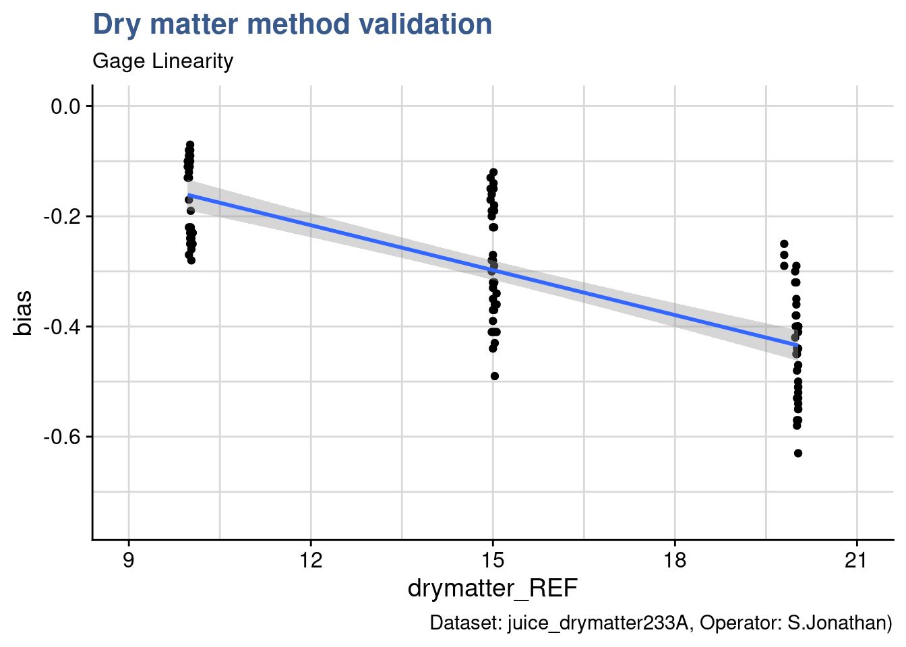
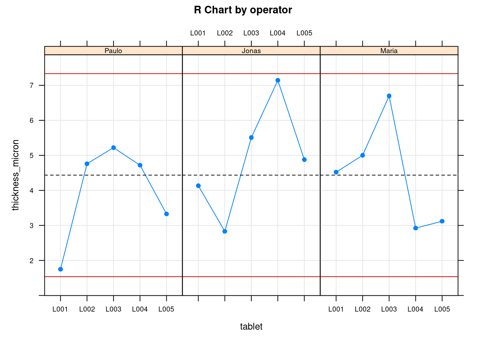
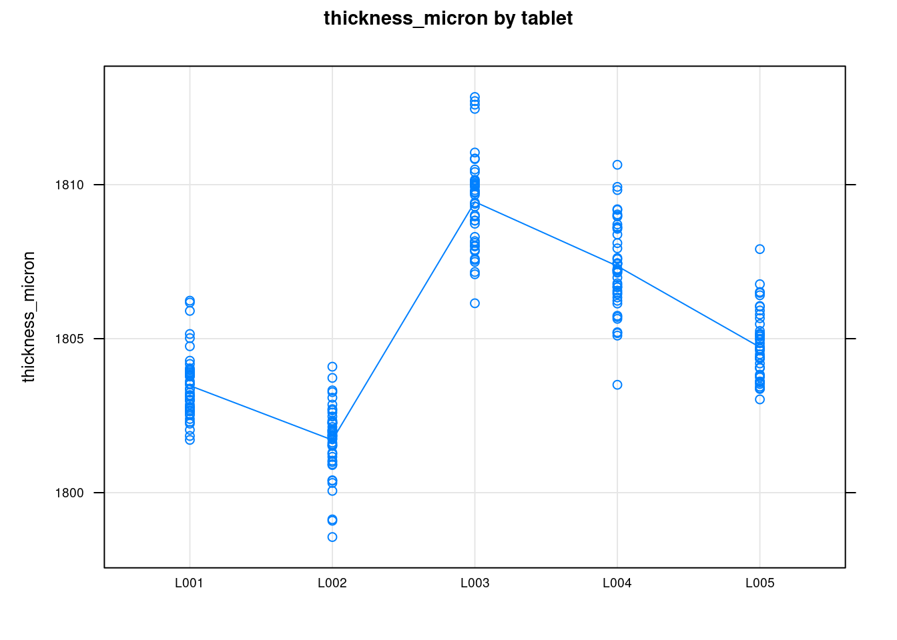

Measurement System Analysis
Analyzing and validating measurement methods and tools is the base for ensuring the quality of manufacturing products. For most commercial products it is not simply about satisfying consumer expectations but has regulatory and legal implications. Using measurement tools in industrial setups for high volume production goes naturally beyond buying and installing an equipment. It requires clear operating procedures, trained operators and tested devices for the specific range applications and products.
There are many different normalizing bodies in the metrology domain with different approaches and terminology. The cases in this section follow a simplified step by step approach aiming at giving an overview of how data treatment can be done with R.
The first case treats the calibration of a recently acquired measurement device by comparing it to a reference device. It provides statistical analysis of the bias of the method compared with the reference for the full measurement range. The following case deals with the estimation of the method precision, namely the measurement repeatability and reproducibility under regular utilization conditions. It provides examples on acceptance criteria typical in industrial context. The final case study presents calculation of the method uncertainty, a more comprehensive indicator taking into account the calculations done in the previous cases.
Calibration
Case study: juice production plant
The Quality Assurance Head has acquired a fast dry matter content measurement device from the supplier DRX. The rational for the acquisition has been the important reduction of the control time. Before it enters operation its performance is being assessed and validated.

A first step after a measurement equipment acquisition is the assessment of the response over the entire measurement range. In particular it is important to verify its linearity and variability and determine the average bias throughout the measurement range.
In a juice production plant the dry matter content for the top seller is around 13% dry matter content. Typical specifications are the Premium fresh apple juice with 12.4 % and the Austrian beetroot juice with 13.2%. Some other specialties may have a higher content up such as the Organic carrot that has 16.3%. After consulting with the Manufacturing Team Leader, the Quality Assurance Head selects checking the equipment in the range of 10 to 20% dry matter content. For the calibration assessment samples are produced at target values set at round numbers (10%, 15% and so on). This data is captured in the juice_drymatter dataset of which we’re checki
juice_drymatter %>%
head(5) %>%
kable(
align = "c",
caption = "juice dry matter data"
)| product | drymatter_TGT | speed | particle_size | part | drymatter_DRX | drymatter_REF |
|---|---|---|---|---|---|---|
| apple | 10 | 20 | 250 | 1 | 9.80 | 10.05 |
| apple | 10 | 20 | 250 | 2 | 9.82 | 10.05 |
| apple | 10 | 20 | 250 | 3 | 9.82 | 10.05 |
| beetroot | 10 | 20 | 250 | 1 | 9.79 | 10.03 |
| beetroot | 10 | 20 | 250 | 2 | 9.75 | 10.03 |
We see in this raw dataset that it contains the same samples dry matter content measured twice. First with the with the new equipment (DRX) and then with the reference equipment (Ref). The reference equipment is considered as such because it has been validated and accepted by the head quarters quality department. The difference between the two devices for each measurement is calculated below and allocated to a new variable with the name bias.
juice_drymatter <- juice_drymatter %>%
mutate(bias = drymatter_DRX - drymatter_REF, part = as_factor(part))A first look at the bias with the skim() function from {skimr} gives already an indication that the bias is not constant along the measurement range.
See {skimr} for more details on this R package, an alternative to base::summary()
library(skimr)skim(juice_drymatter$bias) %>%
yank("numeric")Variable type: numeric
| skim_variable | n_missing | complete_rate | mean | sd | p0 | p25 | p50 | p75 | p100 | hist |
|---|---|---|---|---|---|---|---|---|---|---|
| data | 0 | 1 | -0.3 | 0.14 | -0.63 | -0.4 | -0.29 | -0.19 | -0.07 | ▂▅▆▇▇ |
Such results are not encouraging because a non regular bias along the range may require specific correction for different product which may be not practical and prone to error. Often this requires to dig into detail to understand the causes of the bias and determine if they are related with the physical phenomena and if there are clear controllable causes. Ultimately this could result is narrowing the measurement range and validating a specific device and method for a specific product specification target. For the Quality Assurance Manager it is too early to draw conclusions and he establishes a more detailed plot with {ggplot2} to better visualize the data.
Bias plot
juice_drymatter %>%
ggplot(aes(x = drymatter_REF, y = bias)) +
geom_point() +
geom_smooth(method = "lm", se = T, ) +
coord_cartesian(
xlim = c(9,21),
ylim = c(-.75,0), expand = TRUE) +
theme_industRial() +
labs(title = "Dry matter method validation",
subtitle = "Gage Linearity",
caption = "Dataset: juice_drymatter233A, Operator: S.Jonathan)")
This type of plot is usually called bias plot and provides a view of how the difference between the measurements obtained with the new device and the reference device compare allong the measuremen range. In the plot generated an additional regression line has been introduced with geom_smooth from {ggplot2}. There are several ways to assess the linearity. In this case we’re going to remain at a visual check only leaving to the Design of Experiments case study a more thourough verification.
The linear model appears as well adapted in this case. The first check is the observation that regression line passes close to the averages of each level of the dry matter factor. Nevertheless the slope is rather steep showing a clear increase of the bias (in the negative direction) with the increase in dry matter content.
Bias report
Using well known {dplyr} function the plot is complemented with statistics of the bias for each level of dry matter target: mean, median, standard deviation. A good practice that took some time to adopt but now is well anchored is to always present the sample size which speaks for the relevance of the statistical indicators.
juice_drymatter_bias <- juice_drymatter %>%
group_by(drymatter_TGT) %>%
summarise(bias_mean = mean(bias, na.rm = TRUE),
bias_median = median(bias, na.rm = TRUE),
bias_sd = sd(bias, na.rm = TRUE),
bias_n = n())
juice_drymatter_bias %>%
kable(align = "c", digits = 2)| drymatter_TGT | bias_mean | bias_median | bias_sd | bias_n |
|---|---|---|---|---|
| 10 | -0.17 | -0.15 | 0.07 | 36 |
| 15 | -0.29 | -0.31 | 0.10 | 36 |
| 20 | -0.44 | -0.44 | 0.10 | 36 |
Mean and median bias are very close which indicates that the data is equally distributed around the mean The standard deviation is also very similar from level to level indicating that the measurement variability is not depending on the range of measurement. A decision now needs to be taken on which systematic offset to apply depending on the operational context. As mentioned most commercial products on the production line where the device is used have a target specification around 13% therefore the Quality Assurance Head decides together with Manufacturing Team Leader to put in the operating procedure of the device a unique offset of 0.3 g. This value is assigned to a new variable called juice_cal_u that will be needed later to calculate the measurement uncertainty.
u_cal <- as_vector(juice_drymatter_bias[2,4])
names(u_cal) <- NULL # we're removing the original name to avoid confusion later.Precision
Case study: tablet compaction process
Modern pharmaceutical tablet presses reach output volumes of up to 1,700,000 tablets per hour. These huge volumes require frequent in-process quality control for the tablet weight, thickness and hardness.

Pharmaceutical production setups combine extreme high volumes with stringent quality demands. In this context many manufacturing plants have inline automatic measurement devices providing automatic data collection to a central database but it is not uncommon to see hand held devices and manual log of measurements in spreadsheets. In an age of machine learning and sophisticated predictive tools this may seem awkward but it is common to see coexisting old and new approaches on the shop floor. A recurring check of measurement devices is the famous gage r&R. r&R stands for reproducibility and Reproductibility which combined give the instrument precision, according to the ISO 5725. In any case automatic or manual the way to assess the measuremen device should follow the same approach.
In our case we’re looking into a pharmaceutical company where a tablet compaction process the quality measurement system requires the Production Operator to sample tablets on a regular basis and log the thickness in a spreadsheet on the line. Measurements are done with a micrometer build and acquired specifically for this purpose that has a fixture developed to fit the shape of the tablet.
Besides thickness, the quality measurement system requires the operator to collect quite an large variety of parameters including room conditions too. Elaborating on this a Quality Engineer has prepared a specific file for the gage r&R that also included the replicate number. As it is common practice he asked the measurements to be done by several operators. This data has been loaded into R and is available in the dataset tablet_thickness and an extract is presented here in raw:
tablet_thickness %>%
head(3) %>%
kable(
align = "c",
caption = "tablet thickness gage r&R data"
)| Position | Size | Tablet | Replicate | Day | Date [DD.MM.YYYY] | Operator | Thickness [micron] | Temperature [°C] | Relative Humidity [%] | Luminescence [lux] |
|---|---|---|---|---|---|---|---|---|---|---|
| Position 1 | L | L001 | 1 | Day 1 | 18/11/2020 | Paulo | 1802.5 | 22.3 | 32.7 | 568.6 |
| Position 1 | L | L001 | 2 | Day 1 | 18/11/2020 | Paulo | 1802.8 | 22.3 | 32.8 | 580.4 |
| Position 1 | L | L001 | 3 | Day 1 | 18/11/2020 | Paulo | 1804.0 | 22.3 | 32.8 | 580.5 |
It is an excellent practice to look at raw data because it gives an immediate perception of general aspects such as the number of variables, their levels and their datatypes. Although this is irreplaceable it is possible to go further and skim() provides an excellent complement and summary. Below we see that the test requested by the Quality Engineer has required 675 measurements on 11 different variables by 3 different operators. We can see room conditions are stable, rather normally distributed and having small standard deviations and we can even see that thickness appears with 3 groups which seems related with the 3 sizes noted in the Size column.
skim(tablet_thickness) The initial idea of the Quality Engineer was to establish a separate gage r&R by tablet size. There is sometimes debate if in the study several different specification should be combined or not. In the last quality weekly meeting this was reason for lively discussions with various logical arguments from the Production Leader and the Engineering Manager. They ended up accepting the proposal of a separate gage per size on the logic that it is important to compare the measurement method variability not only with the process variability but also with the specification itself.
Data in excel files to have most of the time human readable formats and the files being open they usually end up with long variable names. Unlike the classical read.csv() function from the base R the read_csv() function from {readr} is not converting character variables to factors. This is a good behavior in our view because it allows for better control and awareness of what is happening. In this case the Quality Engineer is acquainted to the {tidyverse} and is now making the conversion specifically on the desired variables size, tablet and operator. He also makes the filtering for the size L for which he will do the first r&R study.
tablet_thickness <- tablet_thickness %>%
clean_names() %>%
mutate(across(c(size, tablet, operator), as_factor))
tablet_L <- tablet_thickness %>%
filter(size == "L")Now that the dataset is clean and ready he moves forward with the ss.rr() function from the {SixSigma} package.
Gage r&R
library(SixSigma)# dimensions for chunk output when included: fig.dim=c(8, 10)
tablet_L_rr <- ss.rr(
data = tablet_L,
var = thickness_micron,
part = tablet,
appr = operator,
alphaLim = 1,
errorTerm = "repeatability",
main = "Micrometer FTR600\nr&R for tablet thickness",
sub = "Tablet L",
lsl = 1775,
usl = 1825
)The ss.rr function takes the filtered tablet_L dataset and var, part and the arguments appr to precise what is the measurement variable, the part and the operator in this order. Then to be noted that the alphaLim argument is set to 1 in this first assessment. This is to keep all the model terms including non significant one. In future analysis this can be set to 0.05 the usual significance threshold and those non significant terms are omitted. Another detail important to ensure is to select the repeatability as the errorTerm otherwise we get different results than those obtained with base anova and other software aligned with the Automotive Industry Action Group (2010) guidelines such as Minitab. Finally the function also allows to input the limits he also provides in the arguments the current upper and lower limit of the specification, in this case of 1’800 \(\mu m\) +/- 25 \(\mu m\) for tablet L.
The output of this function is a list with several elements inside and an automatically generated report.
names(tablet_L_rr)[1] "anovaTable" "anovaRed" "varComp" "studyVar" "ncat" We’re now looking more in detail in some of them.
Gage acceptance
Measurement system acceptance can be done based on varied criteria and is often done in progressive stages. In Research and Development contexts it is common that the measurement method is developed simultaneously with the end product. There are stages where the teams are conceiving the full industrial setup and there may be an overlap between product sub-assembly, assembly machine and measurement device. These different components of the production or assembly line may not reach maturity all at the same time. In such cases the Quality Assurance may give an approval for the measurement device based on tests done on products that cannot yet be commercialized. This means that the final conditions of usage are not fully tested. In other cases the measurement method is complex but time presses and the teams test the quality of the parts by other means such as the failure rates of the assemblies where the parts go. For all these reasons it is important to clarify at all times the assumptions used in the assessment of the measurement method.
Variance components
A common way to quickly judge if an equipment variability is high is to look at its variance. In our case the Quality Engineer can look at the variance components of the gage r&R study by calling them from the ss.rr list.
tablet_L_rr$varComp %>%
kable(digits = 1)| VarComp | %Contrib | |
|---|---|---|
| Total Gage R&R | 1.6 | 14.8 |
| Repeatability | 1.6 | 14.2 |
| Reproducibility | 0.1 | 0.6 |
| operator | 0.1 | 0.6 |
| tablet:operator | 0.0 | 0.0 |
| Part-To-Part | 9.5 | 85.2 |
| Total Variation | 11.1 | 100.0 |
Looking at the column %Contrib he sees that the total gage R&R is too high when comparing with the established guidelines for gage acceptance:
- Less than 1%: the measurement system is acceptable
- Between 1% and 9%: the measurement system is acceptable depending on the application,
the cost of the measurement device, cost of repair, or other factors - Greater than 9%: the measurement system is not acceptable and should be improved.
Another direct information from this assessment is that this variability comes from the repeatability mostly and not from the operator or from the interaction. This is very useful as a clue to start identifying where the variability comes from and how to try to improve it.
Although quick and providing a first impression, variance is not a very intuitive statistic as is not expressed in the measurement units. A much more common and speaking approach is to look into the standard deviation and compare it with the process variation but also with the specification itself.
Standard deviation components
The standard deviation values from the study can be pulled from the list with the same approach as before.
tablet_L_rr$studyVar %>%
kable(digits = 1)| StdDev | StudyVar | %StudyVar | %Tolerance | |
|---|---|---|---|---|
| Total Gage R&R | 1.3 | 7.7 | 38.5 | 15.4 |
| Repeatability | 1.3 | 7.5 | 37.6 | 15.1 |
| Reproducibility | 0.3 | 1.6 | 7.9 | 3.1 |
| operator | 0.3 | 1.6 | 7.9 | 3.1 |
| tablet:operator | 0.0 | 0.0 | 0.0 | 0.0 |
| Part-To-Part | 3.1 | 18.4 | 92.3 | 36.9 |
| Total Variation | 3.3 | 20.0 | 100.0 | 40.0 |
The study variation table is has several columns. The StdDev column contains the square root of each individual variance. The StudyVar column has each StdDev multiplied by 6 which corresponds to the max variability for each component. Then each StudyVar is divided by the Total Variation and expressed in percentage in the %StudyVar column. The last column %Tolerance contains the division of the StudyVar by the specification interval (+/- 25 \(\mu m\) in this case) expressed in percentage.
The Quality Engineer is now is a position to progress is assessment. According to the guidelines followed in the company the measurement method variation needs to be less than 10% of the process variation to be considered directly accepted. This is expressed here in the column %StudyVar and is 38.46% which is much above this limit. The guidelines state:
- Less than 10%: the measurement system is acceptable
- Between 10% and 30%: the measurement system is acceptable depending on the application,
the cost of the measurement device, cost of repair, or other factors - Greater that 30%: the measurement system is not acceptable and should be improved.
As he already knew, the variability is mostly coming from the repeatability. With this approach he can also compare with the product specification tolerance which is 15.37%. The part to part variation corresponds to the bulk of the variability and this is what is expected.
Although the Quality Assurance department is not fully validating a measurement method with these figures there seems to be potential to improve the situation. At this moment we can consider that the micrometer allows to sort good parts from bad because the variability is lower than 30% of specification tolerance but it cannot be used to drive production as the variation is higher than 30% of the production process variation.
Gage plots
Besides the Variance the Standard Deviation components the ss.rr function generates a full report. We’re going to look into at each of the plots by generating them with the custom function ss.rr.plots. The details of the function itself are presented afterwards.
tablet_L_rr_plots <- ss.rr.plots(
data = tablet_L,
var = thickness_micron,
part = tablet,
appr = operator,
alphaLim = 1,
errorTerm = "repeatability",
main = "Micrometer FTR600\nr&R for tablet thickness",
sub = "Tablet L",
lsl = 1775,
usl = 1825
)plot(tablet_L_rr_plots$plot1)
This first bar plot presents in a graphical way the gage results in percentage and we can quickly grasp if we’re on target by looking at the pink bars and comparing them with the dashed bars. We can see that the G.R&R is above 30% and thus is not acceptable from a Study Variation criteria. In green we see that compared with the specification we’re above 10% but below 30% so acceptable but requiring improvement. We’re now looking into the measurements themselves:
plot(tablet_L_rr_plots$plot6)
plot(tablet_L_rr_plots$plot5)
The previous two plots show the measurements for each operator. The first is the Ranges plot showing the differences between the min and max measurement for each part and the second plot is the means plot showing the mean thickness for each part by operator. These help showing that there is a consistency between operators and help as a diagnosis tool to identify if there would be strange patterns appearing where one of the operators would be for instance systematically measuring very high values. The next two plots show average values by part with all operators combined:
plot(tablet_L_rr_plots$plot2)
plot(tablet_L_rr_plots$plot3)
We quickly see the measurements tend to be simetrically distributed around their means and that the means between the different operators are very similar. This confirms the low reproducibility what has been seen in the Variance Components.
plot(tablet_L_rr_plots$plot4)
This final plot is the so called interaction plot and if there were diverting and strongly crossed lines would indicate that different operators measure the parts in different ways. Again here this confirms the low value obtained for the interaction in the Variance Components table.
Tablet thickness measurements obtained with a gage r&R study done on a pharmaceutical tablet compaction process. Red dashed lines corresponds to the thickness specification limits.

When the gage report was shared with the Production Leader and the Engineering Manager they raised concerns regarding which is how big is our process variability and how much is the process centered. These are valid points as we often go back and forth between measurement validation, product development and process control. Measurement validation makes us look into details on the measured values and question their validity. Taking conscience that the production specification is not adapted, too large or too narrow. Often we realise that production is systematically slightly off centered. Depending on the diagnostic a new gage r&R plan and sampling may need to be prepared and the process or the specification adjusted. Such topics will be further discussed in the Design of Experiments and in the Statistical Process Control subjects.
Negative variance
We’ve started the gage assessment by setting the errorTerm to 1. This made that factors that were non significant remained visible, in our case this happened with the tablet:operator interaction. Although the ss.rr function is always showing zero for non significant factors it may happen that in reality the calculated value is negative.
We refer to page 557 Montgomery (2012) to get guidance on how to adresses this case:
note that the P-value for the interaction term […] is very large, take this as evidence that it really is zero and that there is no interaction effect, and then fit a reduced model of the form that does not include the interaction term. This is a relatively easy approach and one that often works nearly as well as more sophisticated methods.
This approach is the one implemented in {SixSigma}. When we leave the argument alphaLim empty the non significant terms are be suppressed from the model, the Anova is recalculated and the remaining tables updated accordingly. We can control this behavior by playing with different values. Usually we consider a p value of 0.05 but we recommend to start with higher values such as 0.1 or 0.2 to avoid suppressing too quickly the factor which would result in a transfer of their variability into the repeatability. Below we run again the ss.rr function with a limit at 0.05 and get the entire data and plot output in one single step. In our case adjusting the p value has had a very limited impact in the total gage r&R which has changed only from 38.46% to 38.38%.
tablet_L_rr2 <- ss.rr(
data = tablet_L,
var = thickness_micron,
part = tablet,
appr = operator,
alphaLim = 0.05,
errorTerm = "repeatability",
main = "Micrometer FTR600\nr&R for tablet thickness",
sub = "Tablet L",
lsl = 1775,
usl = 1825
)Complete model (with interaction):
Df Sum Sq Mean Sq F value Pr(>F)
tablet 4 1707 427 271.46 <2e-16
operator 2 13 7 4.18 0.017
tablet:operator 8 11 1 0.89 0.524
Repeatability 210 330 2
Total 224 2062
alpha for removing interaction: 0.05
Reduced model (without interaction):
Df Sum Sq Mean Sq F value Pr(>F)
tablet 4 1707 427 272.53 <2e-16
operator 2 13 7 4.19 0.016
Repeatability 218 341 2
Total 224 2062
Gage R&R
VarComp %Contrib
Total Gage R&R 1.632605 14.73
Repeatability 1.565919 14.13
Reproducibility 0.066685 0.60
operator 0.066685 0.60
Part-To-Part 9.448857 85.27
Total Variation 11.081462 100.00
VarComp StdDev StudyVar %StudyVar %Tolerance
Total Gage R&R 1.632605 1.27773 7.6664 38.38 15.33
Repeatability 1.565919 1.25137 7.5082 37.59 15.02
Reproducibility 0.066685 0.25823 1.5494 7.76 3.10
operator 0.066685 0.25823 1.5494 7.76 3.10
Part-To-Part 9.448857 3.07390 18.4434 92.34 36.89
Total Variation 11.081462 3.32888 19.9733 100.00 39.95
Number of Distinct Categories = 3 
Further developments on the gage r&R in the excellent book from Springer by the {SixSigma} package author Emilio L. Cano (2012).
Custom functions
The original report generated by the ss.rrfunction has the inconvenient of being generated as a single plot. Another inconvenient is that there is no option in the function to suppress it in case we just want to look at the data output. To present the individual plots presented in this unit the original function code has had to be modified. This possibility to reuse and modify the code from other authors is one of the great benefits of R. This is possible because are is distributed under a license from the Free Software Foundation. Licenses are long are difficult to read but by simply typing RShowDoc("GPL-3") we can already read in the first few lines you can change the software or use pieces of it in new free programs. The {SixSigma} package itself is also under the same license:
SixSigmaDescription <- utils::packageDescription("SixSigma")
SixSigmaDescription$License[1] "GPL (>= 2)"This being all cleared out the ss.rr function code can the be obtained in RStudio by selecting the package environment in the environment pane and looking for the function. A more direct approach is by simply typing ss.rr on the console. The full code is then revealed and can be copied and modified. For the {industRial} package we’ve copied the code in a new function which we called ss.rr.plots that generates as output a list of plots. Each plot can now be plotted individually.
Uncertainty
In the Pharmaceutical company described in this case study, the final formal Measurement System Analysis reports are issued with a statement on uncertainty. This is a way to combine this various intermediate assessments described before and to communicate the result in a format that can be interpreted by the persons who read measurement results such as Product Development scientists and the R&D management. Different companies adopt more or less sophisticated norms which provide a detailed way of calculating the combined uncertainty that comes from the different assessments performed. In this case study we’re presenting a simple summation in quadrature equivalento to the one described by Bell (2001) page 14:
\[ u=\sqrt{u_{man.}^2 + u_{cal.}^2 + u_{repeat.}^2+ u_{reprod.}^2} \]
This formula consists in taking the square root of the sum of the squares of the standard deviations obtained in the different tests.
The first term is coming from the micrometer manufacturer which mentions in the equipment guide an accuracy of 0.001 mm which corresponds to 1 \(\mu\). We assign this in R to the u_man variable:
u_man <- 1
u_man[1] 1The calibration uncertainty has been established before in the calibration study :
u_cal[1] 0.10244The repeatability and reproducibility uncertainties correspond to the standard deviations calculated in the r&R study. In our case we can even obtain them directly from the Variance Components table generated by the ss.rr function of the {SixSigma} package that has bee discussed in details the Gage acceptance unit. We are going to name \(u_{repeat}^2\) as u_repeat \(u_{reprod}^2\) as u_reprod getting:
u_repeat <- tablet_L_rr$studyVar[2,1]
u_repeat[1] 1.2538u_reprod <- tablet_L_rr$studyVar[3,1]
u_reprod[1] 0.26241Now putting it all together in the uncertainty formula we have:
u <- sqrt(u_man^2 + u_cal^2 + u_repeat^2 + u_reprod^2)
u[1] 1.6283Finally what is usually reported is the expanded uncertainty corresponding to 2 standard deviations. To be recalled that \(\pm\) 2 std corresponds to 95% of the values when a repetitive measurement is made. In this case we have \(U = 2*u\):
U <- 2 * u
U[1] 3.2567For a specific measurement of say 1’800 \(\mu m\) we then say: the tablet thickness is 1’800 \(\mu m\) \(\pm\) 3.3 \(\mu m\), at the 95 percent confidence level. Written in short is:
1’800 \(\mu m\) \(\pm\) 3.3 \(\mu m\), at a level of confidence of 95%
Knowing that the specification is [1’775; 1’825] \(\mu\)m we have a specification range of 50. The expanded uncertainty corresponds to 13.03 %. This is another way of looking into the ratio between method variation and specification. The {SixSigma} package gave a similar result of 15.37%. To be noted that the calculation in by the package corresponds to 3 standard deviations and does not comprise the supplier calibration.